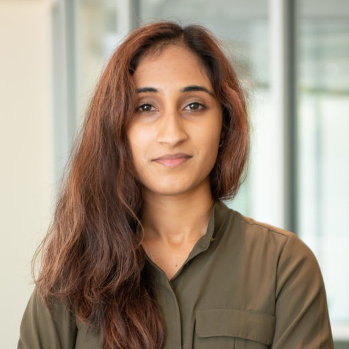
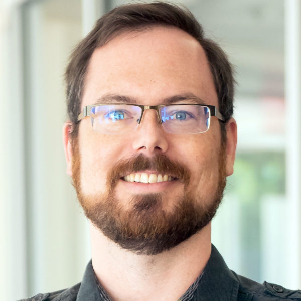

Astronomy Postdocs & Researchers
Our amazing postdocs and researchers contribute significantly to the fantastic science done in our astronomy group. Additionally, some of our graduate students work directly with them, with a faculty member acting as an additional advisor (and official chair of their committee).
If you have any questions, feel free to reach out to our current postdoc contact, Terese Hansen (thidemannhansen@gmail.com).
Extragalactic Astronomy
Stephanie Ho

Stephanie Ho is an astronomy postdoc working with Rob Kennicutt. Stephanie studies the diffuse gas around galaxies known as the circumgalactic medium (CGM) and is interested in understanding how the CGM affects the evolution of galaxies. Outside of astronomy, Stephanie enjoys playing Go and the violin. To learn more about Stephanie, check out the website: stephanieho.com
Jasleen Matharu

Jasleen Matharu's research broadly lies in the area of galaxy evolution. She is interested in understanding the assembly and growth of galaxies, and how this is affected by the large-scale environment within which galaxies reside. To help answer these research questions, Dr. Matharu uses observations of distant galaxies made with the Hubble Space Telescope. In particular, her work uses the unique capabilities of space-based slitless spectroscopy, which can spatially map where star formation occurs in individual galaxies. Prior to beginning her postdoctoral research at Texas A&M University, Jasleen Matharu was a graduate student at the Institute of Astronomy, University of Cambridge and an undergraduate student at University College London (UCL). To learn more about Jasleen, check out her website: jkmatharu.github.io
Guang Yang
 Guang Yang is an astronomy postdoc working with Prof. Casey Papovich and Prof. Jonelle Walsh. He studies supermassive black hole and galaxy evolution. In his free time, Guang likes to swim and read books. To learn more about Guang, check out his website: gyang206265
Guang Yang is an astronomy postdoc working with Prof. Casey Papovich and Prof. Jonelle Walsh. He studies supermassive black hole and galaxy evolution. In his free time, Guang likes to swim and read books. To learn more about Guang, check out his website: gyang206265
Astronomical Instrumentation
Luke Schmidt
Luke Schmidt is an Associate Research Scientist in the Astronomical Instrumentation Lab where he helps manage the day-to-day activities of the lab and fills various roles in the lab instrumentation projects including project management, optical and opto-mechanical design, detectors, and control systems. Dr. Schmidt has been involved with the development of several other optical and infrared astronomical instruments operating between 0.320 and 2.4 microns and is the Instrument Scientist for GMACS, the first light multi-object spectrograph for the Giant Magellan Telescope. Before coming to Texas A&M he was an Instrumentation Scientist with the Magdalena Ridge Observatory Interferometer project and a Postdoc working on NESSI, an IR spectrometer (JHK bands).
Galactic Astronomy
Nilanjan Banik
[summary]
Terese Hansen
 Terese Hansen (she/her) is an astronomy postdoc working with Jennifer Marshall. She uses abundance analysis of metal-poor stars to study the nuclear processes which chemically enriched our Universe. Particularly focusing on the production of heavy elements like Silver and Gold. In her free time, Terese likes to read and go hiking. To learn more about Terese, check out her website: teresehansen.com
Terese Hansen (she/her) is an astronomy postdoc working with Jennifer Marshall. She uses abundance analysis of metal-poor stars to study the nuclear processes which chemically enriched our Universe. Particularly focusing on the production of heavy elements like Silver and Gold. In her free time, Terese likes to read and go hiking. To learn more about Terese, check out her website: teresehansen.com
Paul Zivick
Paul Zivick (he/him) is an astronomy postdoc working with Louis Strigari. His research focuses on studying the internal kinematics of dwarf galaxies surrounding the Milky Way, in particular the Small Magellanic Cloud, using observations from the Hubble Space Telescope and the Gaia Space Telescope. In his free time, Paul likes to play board games (some of his favorites are Terra Mystica, Scythe, and the classic D&D) and enjoys going golfing. Eventually you can learn more about him on his future website, but for now you can email him at pzivick@tamu.edu if you want to get in contact!
Supernovae, Variable Stars & Transients, and Cosmology
Peter Brown
Peter Brown is a research scientist in astronomy collaborating with Nick Suntzeff and Lifan Wang and the students of the Supernova group. He leads observations of supernovae in the ultraviolet with the Swift and Hubble space telescopes. He is a mentor of student researchers on his Aggienova teams. In his free time, Peter likes to creatively carve up books. To learn more about Peter and his research, check out his website: pbrown801.github.io